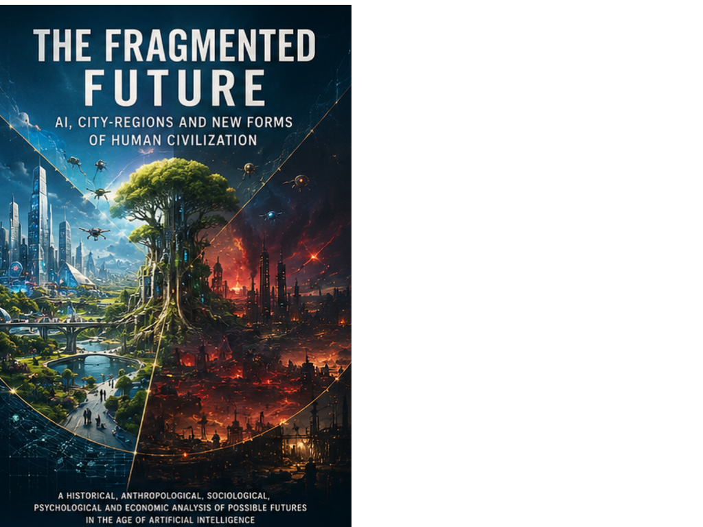

Civilisation · Axiologic Research Editions
The Fragmented Future
AI, City-Regions, and New Forms of Human Civilization
A future can become more local and more centralised at the same time.
Not one future, but a field of them
Artificial intelligence may let city-regions coordinate more effectively while also giving giant systems new powers of planning, surveillance and integration. The Fragmented Future starts from that tension and refuses the lazy singular: there is no inevitable AI future, only competing institutional paths.
History, anthropology, economics and the psychology of power are brought into the same room. Computational empire, the return of the city-region, elite formation, political exit and resilient local capability appear not as science-fiction scenery, but as choices already being rehearsed in infrastructures and incentives.
The scale of a livable civilisation
Will abundance end scarcity? No; it moves scarcity into status, access, land, attention and political protection.
Can small places matter? Perhaps more than before, if global knowledge can support local capability without making every locality dependent on a remote operating centre.
The most dangerous future is the one that arrives as administrative convenience.
A constitution before the crisis
This is a map for readers who want to see the political architecture hidden behind the AI debate. Its scenarios are argued hypotheses, not predictions—and that is precisely why they are useful before momentum makes them feel inevitable.